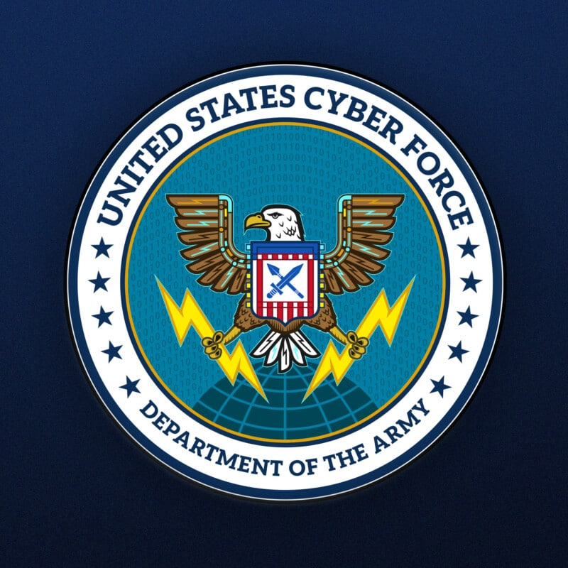

<!DOCTYPE html>
<html lang="en">

<head>
    <meta charset="UTF-8" />
    <title>U.S. Cyber Force</title>
    <script src="https://unpkg.com/react@18/umd/react.development.js"></script>
    <script src="https://unpkg.com/react-dom@18/umd/react-dom.development.js"></script>

    <!-- Don't use this in production: -->
    <script src="https://unpkg.com/@babel/standalone/babel.min.js"></script>
    <link rel="stylesheet" href="./assets/css/style.css" />
</head>

<body>
    <div id='blog'></div>
    <script type='text/babel'>

        function Blog() {
            return (
                <>
                    <article class='blog-post'>
                        </img>
                        <div class='blog'>
                            <h3>U.S. Cyber Force</h3>
                            <h4>topics: military cybersecurity</h4>
                            <h5>by Tyler Huff</h5>
                            <br></br>
                            <p>As I sit down to doom scroll and check today's news, like I do every morning, an article appears under my cybersecurity feed from Apple News that catches my eye. It's titled "Should the U.S. Military Add a Cyber Force?". I know that the U.S. created the Space Force in 2019 to monitor and protect things in orbit. I also know that every branch as well as most, if not all, of the three letter agencies have a cybersecurity division so when I saw this I thought that if I was ten years younger I would enlist without a second thought. I think that our entire cybersecurity infrastructure is severely understaffed and that we are one attack away from complete chaos. I remember when there was panic and chaos during COVID because of toilet paper. I can't even fathom the pandemonium that will ensue if something like our electricity or any other critical utility stops working due to a cyber attack. Our great nation has been a military superpower since we started but we have not taken the internet or privacy seriously for quite some time. There are very dedicated people currently working to defend our countries cyber battlefield but because the majority of our politicians are of the boomer generation and probably keep their 6 character password written on a sticky note somewhere on their desk that is reused on everything, I find it hard to believe that they would take the funding of any of these areas seriously. But if we created a separate branch like the Space Force, which was the first new branch in over seven decades, and called it Cyber Force, that handled everything that was related to cyber and gave them a dedicated budget like every other branch we could maybe catch up and outpace the rest of the worlds cybersecurity.
                            </p>
                            <br></br>
                            <div>image credit: <a target='_blank' href='https://www.fdd.org/analysis/2024/03/25/united-states-cyber-force/'>https://www.fdd.org/analysis/2024/03/25/united-states-cyber-force/</a></div>
                            <div>reference: <a target='_blank' href='https://apple.news/Ab--v4M0QRf2qtgswLcDxew'>https://apple.news/Ab--v4M0QRf2qtgswLcDxew</a></div>
                        </div>
                    </article>
                </>
            )
        }
        const container = document.getElementById('blog');
        const root = ReactDOM.createRoot(container);
        root.render(<Blog />);
    </script>
</body>